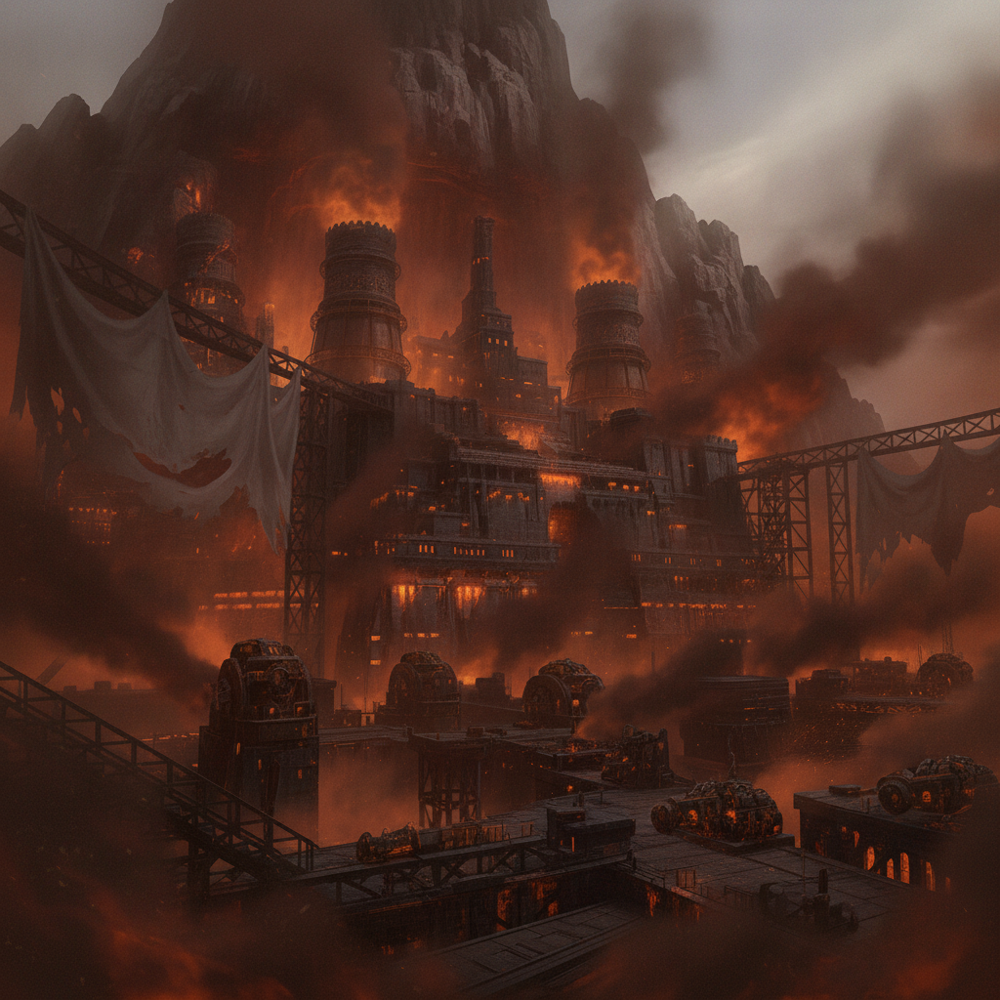

Cinderhold, the Vashan Forge-City, glows with molten-orange light through a permanent haze of ember and soot. Great ungoverned aether-kilns roar, a testament to the Kiln-Sworn's defiance.
Ember's name opens doors no licensed talent could. Her forge-craft begins to arm our growing coalition.
While Ember builds her army, I expose corruption at the highest levels of the Dominion. We hear reports of other stranded pairs—some murdering the monarchs of their landing-nations; others building communications back to us.
Our coalition grows, fueled by a shared hunger for vengeance.